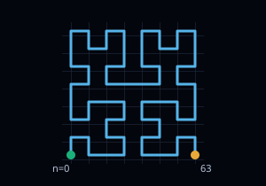
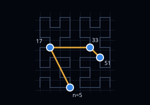
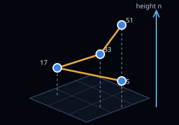
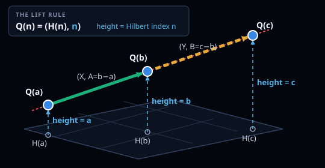

Understand the Hilbert construction one load-bearing idea at a time
This guide assumes comfort with ordinary arithmetic and coordinates, but not Hilbert curves, base 4, two-adic valuation, or formal proof. It follows the order in which the argument became explainable from memory.
By the end, you should be able to explain why the adjacent pair laws force two coprime scale factors to be odd, why the endpoint pair law forces their sum to be odd, and why that rules out three collinear lifted points.
The construction is unconditional and formalized in Lean. These lessons are a pedagogical companion, not the authoritative proof artifact. External mathematical review and community acceptance remain pending.
0What the problem actually asks
Can a walker move forever among integer points in 3D, reuse only finitely many kinds of step, and still avoid every collinear triple?
A lattice point is an integer-coordinate location such as \((4,-2,7)\). A step vector records the change from one visited point to the next. The walker may visit infinitely many points; only the menu of allowed step vectors must be finite.
The original question asks whether every such infinite walk must contain three distinct collinear vertices. To answer “no,” one explicit infinite counterexample is enough.
The sequence has a point for every natural-number time.
The same finite set of displacement vectors is reused forever.
Repeating one location does not count as a collinear triple.
Construct one valid walk that avoids all such triples.
“Finite step set” does not mean the robot stays in a finite region or eventually stops. A finite alphabet can produce an infinite sentence; a finite move menu can produce an infinite walk.
Checkpoint: can you state the target?
Explain, without formulas, what must be finite, what must be infinite, and what one counterexample must avoid.
1Trace, select, and lift
Let \(H(n)\in\mathbb Z^2\) be the planar point reached at index \(n\) along a nested discrete Hilbert path. Consecutive Hilbert indices reach neighboring grid points.
Trace. Build the infinite planar route \(H(0),H(1),H(2),\ldots\).
Select. Keep a controlled increasing sequence of Hilbert indices \(n_0,n_1,n_2,\ldots\).
Lift. Make the selected index the third coordinate.



The height is literal, not decorative. If two selected indices differ by \(d\), then their lifted points differ in height by exactly \(d\).
The selector must supply two guarantees:
- bounded gaps, so successive 3D steps come from a finite menu;
- one common terminal state, so the same pair law applies to every pair of selected indices.
Lifting every Hilbert point first produces an appealing staircase, but it fails: lifted indices 3, 4, and 5 are collinear. The actual construction traces, selects, and then lifts.
Checkpoint: which component does which job?
- What does the Hilbert route provide?
- What two properties must the selector provide?
- Why use the selected index as height?
2Why the selected gaps are 4 through 28
Split the Hilbert indices into aligned blocks of sixteen:
From each block, keep exactly one index. The block’s incoming terminal state chooses one offset from the fixed table:
The selected index has the form
The symbols \(1,3,5,13\) are candidate offsets. They do not mean that four points are retained from every block.
Between consecutive blocks, the selected gap is
The smallest possible value is \(16+1-13=4\), and the largest is \(16+13-1=28\). Thus
Why this gives a finite 3D step menu
A gap of at most 28 means the Hilbert route takes at most 28 planar unit steps between selected points, so each planar coordinate changes by at most 28 in absolute value. The lift’s height change is the same index gap. Every successive displacement therefore lies in the finite box
An index difference of 12 means 12 Hilbert unit steps and 11 indices strictly between the endpoints. Also, “4 through 28” describes index and height gaps—not the Euclidean lengths of the 3D arrows.
Checkpoint: recover one real gap
The first two canonical selected indices are 5 and 17. What is their gap, and how many indices lie strictly between them?
3What terminal state remembers
Each recursive Hilbert square is entered and exited in one of four orientations. The proof names the resulting transformations \(I,S,T,C\). On the state map they are drawn as right, up, down, and left.
A terminal state is not another position. It is the orientation left in the decoder after the final base-4 digit has been processed.
The decoder’s possible leftover orientations: I, S, T, and C.
The possible two-digit base-4 endings from \(00_4\) through \(33_4\).
The canonical suffix table is:
Each state is its own inverse. The chosen suffix contributes the same transformation as the incoming state, so applying both cancels the orientation and leaves state \(I\).
It computes the block-prefix state once and applies the fixed table. A white ring on the state map means “the table’s canonical representative,” not “the first blue cell encountered.” Other same-state cells may be valid but unused.
Why equal terminal states matter later
When two base-4 words finish in the same state and share a low suffix, the proof can undo that common suffix from right to left. Both words reach their first mismatch in one common orientation. That makes the two mismatch digits geometrically comparable.
Checkpoint: states versus suffixes
- Why are there 16 two-digit suffixes but only four states?
- What does the suffix lookup guarantee?
4Build a fingerprint for a planar vector
For a nonzero integer \(n\), the two-adic valuation \(\nu_2(n)\) counts how many factors of 2 divide it. For example, \(40=2^3\cdot5\), so \(\nu_2(40)=3\).
Now take a nonzero planar vector \(u=(u_x,u_y)\). Define the common binary scale
After removing that common power of two, either exactly one coordinate is odd or both are odd. Record that with one bit:
The proof’s vector fingerprint is
For \(u=(6,12)\), the coordinate valuations are 1 and 2, so \(p=1\), \(\epsilon=0\), and \(V(u)=2\). For \(u=(6,10)\), both valuations are 1, so \(V(u)=3\).
It does not identify the vector, its length, direction, signs, or odd coordinate values. It keeps only the common binary scale and whether one or both reduced coordinates are odd.
The scaling law
Multiplying a planar vector by a positive integer \(k\) adds \(\nu_2(k)\) to both coordinate valuations. Therefore
The coefficient 2 is the lever used later: an integer gap scaled by \(k\) gains \(\nu_2(k)\), while the planar-vector fingerprint gains \(2\nu_2(k)\).
The ordinary valuation and Hilbert recursion are established mathematics. This exact scalar fingerprint is a purpose-built packaging introduced in the manuscript. The same-terminal-state pair law below is the substantive proof-specific theorem. Lean checks correctness, not historical priority; external review of novelty is pending.
Checkpoint: scale one fingerprint
If \(V(u)=3\) and \(k=4\), what is \(V(ku)\)?
5Why the Hilbert pair law is true
For two different indices \(m,n\) with the same terminal state, the theorem says
Watch one base-4 mismatch become a planar fingerprint
\(80=2^4\cdot5\), while \(H(80)-H(0)=4(0,3)\).
\(\nu_2(80)=V(0,12)=4=2j\)\(96=2^5\cdot3\), while \(H(96)-H(0)=4(1,3)\).
\(\nu_2(96)=V(4,12)=5=2j+1\)Read both base-4 indices from the right until reaching their first different digit. Suppose that mismatch occurs at position \(j\). The final \(j\) base-4 digits match, so their difference contains a factor \(4^j=2^{2j}\).
The mismatching digits have only two parity types:
On the planar side, matching lower digits produce matching lower coordinate bits. At binary position \(j\), an odd digit difference changes exactly one emitted coordinate bit, giving fingerprint \(2j\). A digit difference of 2 changes both, giving fingerprint \(2j+1\). The two sides match in both cases.
Why the terminal-state hypothesis is indispensable
The same base-4 digit can be interpreted inside differently rotated or reflected Hilbert pieces. Equal terminal states let us rewind the common low suffix and recover one shared orientation at the first mismatch. Without that alignment, “the same mismatch” need not emit the same type of coordinate-bit difference.
Matching final base-4 digits create matching low binary coordinate bits. The first mismatching digit then says whether one coordinate changes first or both do. The index gap and vector fingerprint encode those same two possibilities as \(2j\) or \(2j+1\).
In any base, matching final digits cancel on subtraction. In base 4, each matching digit contributes a factor of 4.
A “child square” is one ordinary quarter of the current grid square. The carried state tells the next digit how that quarter is turned.
Checkpoint: explain the bridge in one sentence
Why do the index-gap valuation and planar-vector fingerprint agree?
6Why three selected lifts cannot be collinear
Assume for contradiction that three selected indices \(a<b<c\) produce collinear lifted points. All selected indices have the same terminal state, so the pair law applies to \((a,b)\), \((b,c)\), and \((a,c)\).
Let the adjacent index—and therefore height—gaps be
and let the corresponding planar chords be

Collinearity produces one common integer vector
The full 3D displacements are \((X,A)\) and \((Y,B)\). Collinearity gives equal planar change per unit height, hence
Remove the greatest common factor \(g=\gcd(A,B)\):
After cancelling \(g\), we have \(sX=rY\). Coordinate by coordinate, coprimality implies that \(r\) divides both coordinates of \(X\). Define \(W=X/r\); then \(W\in\mathbb Z^2\), and substitution gives
Nothing guesses \(W\). Euclid’s lemma constructs it: from \(r\mid sX_i\) and \(\gcd(r,s)=1\), conclude \(r\mid X_i\) for each coordinate, then set \(W=X/r\).
The adjacent pairs force \(r\) and \(s\) to be odd
Introduce
For pair \((a,b)\), the gap is \(gr\) and the chord is \(rW\). Pair law plus scaling gives
The pair \((b,c)\) similarly gives
Therefore \(\alpha=\beta\). If their common value were positive, both \(r\) and \(s\) would be even, contradicting \(\gcd(r,s)=1\). Hence
The endpoint pair forces \(r+s\) to be odd
The endpoint gap and planar chord are
Let \(\delta=\nu_2(r+s)\). The endpoint pair law compares an index-side valuation of \(\gamma+\delta\) with a vector-side fingerprint of \(w+2\delta=\gamma+2\delta\):
Thus \(\delta=0\), so \(r+s\) is odd.
The adjacent pairs forced \(r\) and \(s\) to be odd. Ordinary parity says their sum is even. The endpoint pair law forced that same sum to be odd. Therefore the original collinearity assumption is impossible.
The proof in six ordinary-language sentences
- Assume three distinct selected lifted points are collinear; their common terminal state lets us apply the pair law to all three pairs.
- Remove the gcd from the two adjacent index gaps, leaving coprime scale factors \(r\) and \(s\).
- Collinearity and coprimality express the adjacent planar chords as \(rW\) and \(sW\) for one nonzero integer vector \(W\).
- The adjacent pair laws give equal two-adic valuations for \(r\) and \(s\); coprimality makes both valuations zero, so both numbers are odd.
- The endpoint pair law forces \(r+s\) to have valuation zero, so their sum is odd.
- But odd plus odd is even, which contradicts the assumed line.
Final checkpoint: reconstruct the contradiction
- Why does collinearity produce \(X=rW\) and \(Y=sW\)?
- Why does \(\alpha=\beta\) become \(\alpha=\beta=0\)?
- Which two endpoint quantities become \(\gamma+\delta\) and \(\gamma+2\delta\)?
7What is proved, checked, and still pending
States the explicit infinite construction and proves its pair law, selector bounds, collinearity contradiction, and finite-menu conclusion.
Kernel-checks the load-bearing theorem against pinned Lean and Mathlib versions, with no unfinished placeholders or project-specific axioms.
Records 500,001 exact vertices and 16 realized displacement vectors as reproducible implementation evidence.
Checks all 125,000,250,000 earlier-point directions in that prefix; it does not prove the infinite theorem.
The repository’s claim is an unconditional construction, not a result conditional on a conjecture or a large computation. The remaining uncertainty is external assessment: a formal proof can faithfully prove definitions that reviewers later judge not to match the intended problem. The proof page therefore links the formal theorem and records that review status.
The Hilbert route supplies planar adjacency; terminal-state steering supplies a bounded same-state subsequence; lifting turns index into height; the pair law synchronizes index and planar binary scales; and the unequal scaling coefficients make a collinear triple impossible.
Pedagogical guide only. Authoritative sources: the proof manuscript and the Lean project in the repository. External mathematical review and community acceptance are pending.